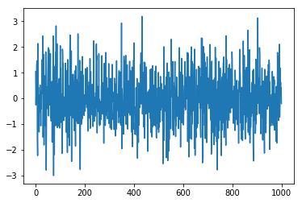
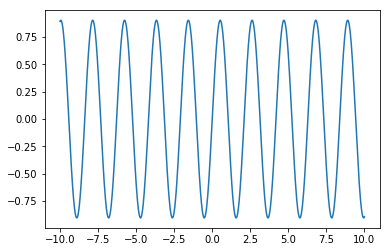
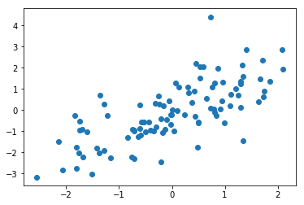
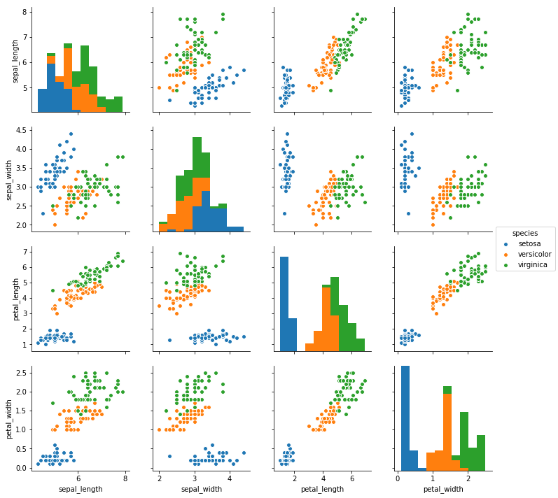

print("Hello!")Hello!원래 ipython는 파이썬을 위한 향상된 대화형 커맨드라인 콘솔입니다. Jupyter notebook은 그것에서 보다 발전된 형태로 코딩과 문서화를 동시에 해서 생산성을 극대화 하는 도구입니다.
print("Hello!")Hello!파일 시스템과 상호작용을 할 수 있는 명령어로 % 기호로 시작합니다. 현재 디렉토리 위치를 출력해 보겠습니다.
%pwd'/home/partrita/Documents/blog/partrita.github.io/posts'더 많은 매직 명령어는 %lsmagic으로 확인 할 수 있고, 각 명령어에 ?를 추가하면 추가 정보를 보여줍니다.
%lsmagicAvailable line magics:
%alias %alias_magic %autocall %automagic %autosave %bookmark %cat %cd %clear %colors %config %connect_info %cp %debug %dhist %dirs %doctest_mode %ed %edit %env %gui %hist %history %killbgscripts %ldir %less %lf %lk %ll %load %load_ext %loadpy %logoff %logon %logstart %logstate %logstop %ls %lsmagic %lx %macro %magic %man %matplotlib %mkdir %more %mv %notebook %page %pastebin %pdb %pdef %pdoc %pfile %pinfo %pinfo2 %popd %pprint %precision %profile %prun %psearch %psource %pushd %pwd %pycat %pylab %qtconsole %quickref %recall %rehashx %reload_ext %rep %rerun %reset %reset_selective %rm %rmdir %run %save %sc %set_env %store %sx %system %tb %time %timeit %unalias %unload_ext %who %who_ls %whos %xdel %xmode
Available cell magics:
%%! %%HTML %%SVG %%bash %%capture %%debug %%file %%html %%javascript %%js %%latex %%markdown %%perl %%prun %%pypy %%python %%python2 %%python3 %%ruby %%script %%sh %%svg %%sx %%system %%time %%timeit %%writefile
Automagic is ON, % prefix IS NOT needed for line magics.자동완성은 믿을 수 없을 정도로 아주 유용한 기능입니다. 코딩을 하면서 모든 것을 타이핑하는것보다 tab키를 누르면 알아서 완성해주는 기능입니다.
matplotlib은 파이썬의 중심 라이브러리입니다. 사용하기 복잡할 수 있지만 풍부하고 강력한 기능을 제공하죠. 다만 기본 스타일이 촌스럽게 느껴질수 있습니다. 그래서 seaborn이 만들어 졌죠. seaborn은 matplotlib 기반으로 사용하기 쉽고 통계적인 시각화를 제공합니다.
# 필요한 모듈을 임포트합니다.
import numpy as np
import matplotlib.pyplot as plt
import seaborn as sns
%matplotlib inline# matplotlib 으로 임의의 신호를 생성하고 그려보자
y = np.random.randn(1000)
plt.plot(y)
# 수학함수를 그래프로 그려보자
x = np.linspace(-10.0, 10.0, 1000)
y = np.sin(3 * x) * np.exp(-0.1, x**2)
plt.plot(x, y)
# 산점도를 그려보자
x = np.random.randn(100)
y = x + np.random.randn(100)
plt.scatter(x, y)<matplotlib.collections.PathCollection at 0xb66f4a8>
seaborn은 사용하기 쉬운 발전된 기능을 제공 합니다.
# 예제에 사용될 데이터를 읽어오자
df = sns.load_dataset("iris")
df.head() # 데이터의 모양을 확인| sepal_length | sepal_width | petal_length | petal_width | species | |
|---|---|---|---|---|---|
| 0 | 5.1 | 3.5 | 1.4 | 0.2 | setosa |
| 1 | 4.9 | 3.0 | 1.4 | 0.2 | setosa |
| 2 | 4.7 | 3.2 | 1.3 | 0.2 | setosa |
| 3 | 4.6 | 3.1 | 1.5 | 0.2 | setosa |
| 4 | 5.0 | 3.6 | 1.4 | 0.2 | setosa |
사용한 데이터셋은 붓꽃(iris) 의 3가지 종(setosa, versicolor, virginica)에 대해 꽃받침(sepal)과 꽃잎(petal)의 넓이와 길이를 정리한 데이터입니다.

위 그림을 참고하시면 이해가 되실 겁니다.
# pair plot을 그려본다
sns.pairplot(df, hue="species", size=2.5)
각각의 붓꽃종에 따라 꽃받침(sepal)과 꽃잎(petal)에 어떠한 연관성이 있는 지 확인 할 수 있습니다. 예를 들면 꽃잎의 길이가 길면 넓이도 넓어지는것은 모든종에서 연관관계가 있는 것을 볼수 있습니다.